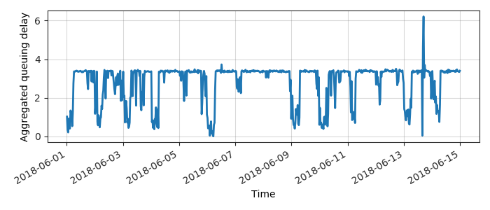
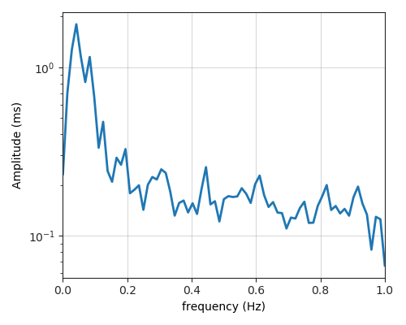
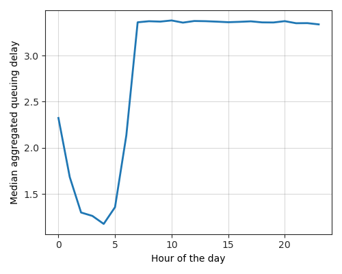
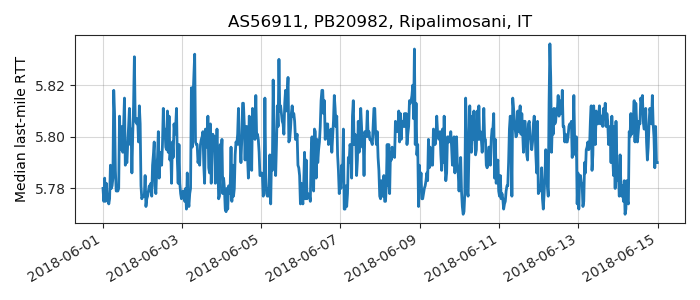
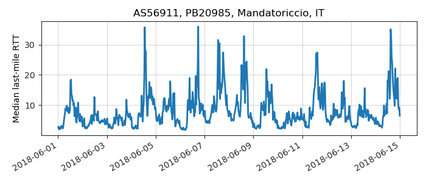

---
layout: default
title: Last-mile delay survey / 2018-06-01 / AS56911
---
AS56911, ASN-WARIAN Internet Service Provider, IT
Summary
- Daily last-mile fluctuations: mild
- Number of probes: 3
- APNIC eyeball rank: 6009
- Daily fluctuations: True
- Main frequency: 0.0417
- Average peak-to-peak amplitude: 1.80ms
Aggregated last-mile queuing delay

Periodogram

24H profile

Probes' last-mile RTT

- 
- 